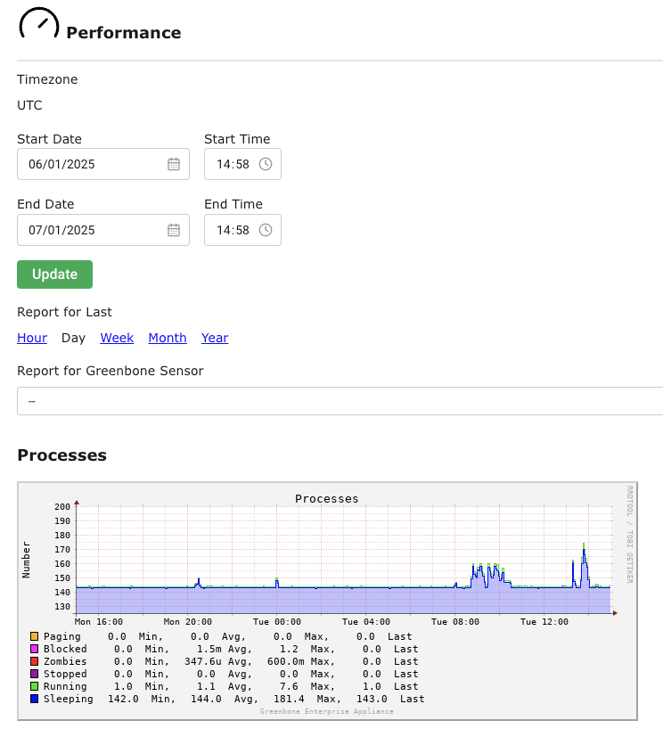

16 Управление производительностью¶
При работе АК-ШУМКАР между прибором, объектами и любыми сенсорными устройствами могут передаваться значительные объемы данных. Кроме того, результаты необходимо анализировать, фильтровать и обрабатывать через компьютер. В зависимости от модели устройства, количества пользователей и конфигурации задач проверки, многие из этих процессов будут выполняться одновременно.
16.1 Мониторинг производительности устройства¶
Общую работу АК-ШУМКАРА можно отслеживать, выбрав Администрирование > Производительность в меню (см. Рис. 16.1).


Рис. 16.1 Отображение производительности прибора¶
Можно отобразить использование ресурсов устройства за последний час, день, неделю, месяц или год.
Примечание
Производительность датчика настроения также может быть включена в ведущее устройство.
Следующие разделы важны:
- Процессы
Большое количество процессов не критично. Однако в первую очередь должны быть только воспроизводимые и запущенные процессы.
- Загрузка системы
Постоянная высокая загрузка имеет решающее значение. Допустимой считается нагрузка 4 на систему с 4 ядрами.
- Использование ЦП
Особенно важен высокий уровень Wait-IO.
- Использование
Устройство использует агрессивное кэширование. Использование большей части памяти в объеме кэша допускается.
- Использование свопа
Использование подкачки памяти указывает на потенциальную перегрузку системы.
16.2 Оптимизация производительности¶
Скорость поворота зависит от многих параметров:
Выбранные порты
Выбранная внешняя сторона
Порядок достижения целей
16.2.1 Выбор списка портов для задачи¶
Список портов, настроенный для целей, оказывает большое влияние на продолжительность живого теста и случайные уязвимости целей.
16.2.1.1 Общая информация о портах и списках портов¶
Порты — это точки подключения сетевой связи. Каждая портовая система связана с портом другой системы.
Порты протокола управления передачей (TCP)
65535 TCP-портов для каждой системы
Передача данных происходит в обоих направлениях между двумя портами TCP.
Сканирование TCP-портов обычно происходит просто и быстро.
Порты протокола идентификации дейтаграмм (UDP)
65535 портов UDP для каждой системы
Передача данных происходит только в одном направлении между двумя портами UDP.
Данные, полученные по UDP, не обязательно подтверждаются, поэтому проверка портов UDP обычно занимает больше времени.
Порты с номерами от 0 до 1023 являются привилегированными или системными портами и не могут быть открыты пользовательскими приложениями. [1].
Управление по присвоению номеров в Интернете (IANA) Включите порты, например, порт 80 — «http» или порт 443 — «https». Зарегистрировано более 5000 портов.
Сканирование всех портов во многих случаях занимает много времени, и многие порты обычно не используются. Чтобы решить эту проблему, можно использовать управляемые порты.
Проанализированы все порты всех систем, доступных через Интернет, и созданы наиболее часто используемые порты. Они не обязательно отражают список IANA, поскольку они не обязательно регистрируют конкретный тип услуги для обычного порта. Нмап, сканер портов с открытым исходным кодом и сканер «Ак-шумкар» по умолчанию используют разные методы, а также не проверяют все порты.
Для большинства сканирований зачастую достаточно сканировать порты, зарегистрированные в IANA.
На устройстве предварительно сохраняются следующие управляемые порты:
Все TCP, назначенные IANA: все TCP-порты, назначенные Управлением по присвоению номеров в Интернете (IANA), постоянно обновляются.
Все TCP и UDP, назначенные IANA: все порты TCP и UDP, назначенные Управлением по присвоению номеров в Интернете (IANA), постоянно обновляются.
Все привилегированные ПТС
Все привилегированные TCP и UDP
Все TCP
Все 100 лучших UDP TCP и Nmap: все порты TCP и 100 лучших портов UDP по данным сетевого сканера Nmap, постоянно обновляемые.
Все TCP и Nmap Top 1000 UDP: все TCP-порты и 1000 лучших UDP-портов по данным сетевого сканера Nmap постоянно обновляются.
Nmap Top 2000 TCP и Top 100 UDP: 2000 лучших TCP-портов и 100 лучших UDP-портов по данным сетевого сканера Nmap, постоянно обновляемые.
Ак-шумкар по умолчанию: TCP-порты, которые сканируются сканером Ак-шумкар при открытии внешних портов по умолчанию.
Примечание
Дополнительные заданные порты можно создать, как следует в главе 9.7.
16.2.1.2 Выбор итогового списка портов¶
При выборе списка портов необходимо учитывать производительность и продолжительность работы.
Продолжительность оказания услуг в определенной конфигурации сети и предоставлении проверяемых портов.
Службы, не относящиеся к портам в списке, не проверяют наличие уязвимостей. Кроме того, приоритетные заявления, направленные к таким портам, не будут обнаружены. Вредоносные приложения в основном используют открытые порты, которые обычно не используются, и находятся далеко от системных портов.
Другими критериями являются механизмы крепления, которые активируются при тщательном сканировании портов и инициируют контрмеры или оповещения. Даже при обычном сканировании брандмауэры могут имитировать активность всех портов 65535 и, таким образом, замедлять фактическое сканирование с помощью так называемых тайм-аутов.
Кроме того, на каждой запрашиваемой портовой службе, стоящей за ним, реагирует как минимум одна запись в журнале. По организационным причинам некоторые службы можно сканировать только в ограниченное время.
16.2.1.2.1 Продолжительность оказания помощи¶
В некоторых случаях при регулировке портов проверка всех портов TCP и UDP может занимать до 24 часов и более для одной системы. Поскольку проверка выполняется параллельно, обе системы требуют немного больше времени, чем одна система. Однако распараллеливание имеет свои ограничения из-за системных ресурсов и производительности сети.
Для подключения всех TCP-портов IANA обычно требуется всего несколько минут.
Поскольку контрмеры могут увеличить продолжительность стабилизации, регулирование можно предотвратить, внеся некоторые изменения в конфигурацию защитной системы.
В случае возникновения подозрений на компрометацию или серьезных нарушений безопасности, неизбежна полная неожиданность.
16.2.1.2.2 Полная безопасность¶
При сканировании портов полной безопасности не существует, а это означает, что даже при сканировании всех портов TCP и UDP заданное время ожидания тестирования порта может быть слишком коротким, чтобы обеспечить скрытое гарантированное решение.
При наличии первичного подозрения следует проверяться опытным тестером на проникновение.
16.2.2 Выбор оформления офиса для задачи¶
Конфигурация также влияет на продолжительность коррекции. Устройство предлагает четыре различных модуля для устранения уязвимостей:
Полный и быстрый
Полный и быстрый ульт
Полный и очень глубокий
Полный и очень глубокий ульт
Конфигурации Полный и быстрый и Полный и быстрый ульт Оптимизируйте процесс обработки, используя информацию, полученную ранее при сканировании. Вы изобретены только полезную ВТ, что приводит к уменьшению продолжительности жизни.
Сканирование с использованием конфигураций программного обеспечения Полный и очень глубокий и Полный и очень глубокий ульт отключите уже обнаруженную информацию и выполните все доступные ВТ без исключения.
16.3 Очередь¶
Когда нажимается на задачу или аудит, он добавляется в очередь ожидания и получает статус В очереди. Сканер начинает сканирование только в том случае, если доступно достаточно системных ресурсов. Доступные ресурсы, основанные на моделях устройств, используемой версии ГСН и современных технологиях на основе промышленных систем. Кроме того, синхронизация в очереди запускается с интервалом в 1 минуту, чтобы избежать перегрузки системы.

Наиболее важным ресурсом для подключения является оперативная память (ОЗУ). Для выполнения каждого решения требуется минимум операций памяти, поскольку один и тот же процесс не может обрабатывать несколько сканирований разными пользователями или даже одним и тем же пользователем. Оперативная память имеет физические ограничения и не может быть использована удовлетворительным образом.
ЦП, сетевое соединение и дисковый ввод-вывод также являются обязательными для системных задач. Однако, в отличие от оперативной памяти, их можно использовать совместно за счет более медленного аппаратного выполнения.
Предупреждение
Если одновременно запускается большое количество задач, например, по одному и такому же расписанию, это, в свою очередь, не приведет к влиянию на технику, пока не будет превышен объем ОЗУ. Это может оказать негативное влияние на производительность системы и привести к ее сбоям.
Диаграммы производительности системы предоставляют подробную информацию о динамике оперативной памяти (см. главу 16.1).
В некоторых случаях задачи/аудиты остаются в очереди ожидания:
Слишком много задач/аудитов для выполнения и выполнения одновременно, и недостаточно оперативной памяти.
Устройство осуществляет канал обновления и в настоящее время загружает новые виртуальные машины.
Устройство только что запущено и в настоящий момент загружает виртуальные терминалы.
Когда необходимая оперативная память снова становится доступной или завершается загрузка ВТ, для выполнения задачи/аудита из очереди ожидания по принципу «первым пришел — первым отключен».
Встроенное управление с помощью главного датчика обеспечивает рабочее управление как ведущим телефоном, так и датчиком. Каждый датчик управления включается автоматически, как показано выше, и расходует ресурсы для выполнения тестов на уязвимости устройства. Мастер расходует ресурсы для каждой задачи датчика, которой он должен управлять.
Предупреждение
Если одновременно включается большое количество датчиков задач, например, по одному и такому же расписанию, включение не приведет к влиянию мощности на тех пор, пока не превысит объем ОЗУ. Это может оказать негативное влияние на производительность системы и привести к ее сбоям.
Сноски